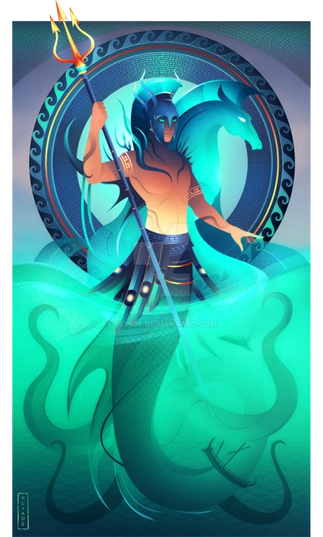
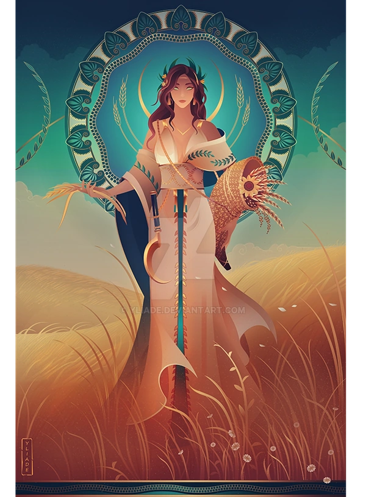

Os deuses gregos
Existem diversos deuses gregos,mas ele geralmente são dividos em dois grupos os deuse maiores, e os deuses menores,os deuses maiores são aqueles que os gregos costumavam a fazer ofereanda, ou os que tinham os maoires templos,além de serem os mais poderosos e mais importantes,já os deuse menores são os deuses que ninguem lembra, como por exemplo o deus dos feijões entre outros
Porém até entre os deuses maiores haviam os mais importantes os Deuses do Olimpo, também chamado de os olimpianos, os 12 deuses que formam o panteão grego. Todos viviam no topo do Monte Olimpo e por isso, recebem esse nome. São eles: Zeus, Hera, Poseidon, Atena, Ares, Deméter, Apolo, Ártemis, Hefesto, Afrodite, Hermes e Dionísio.
Em algumas versões, os nomes desses deuses podem variar, mas geralmente são esses que compõem o panteão. Podemos também citar Hades, deus do submundo, que por vezes é incluído como deus do Olimpo. Além dele, em algumas versões, Héstia, irmã de Zeus, é incluída também.
Zeus
Zeus era filho de Cronos, o mais forte dos titãs,Titã esse que tomou sua propia irmã reia a deusa da maternidade como esposa,juntos tiveram muitos filhos: Zeus, Poseidon, Hades, Hera, Héstia e Deméter. Temendo a rivalidade de seus filhos, Cronos devorou-os logo ao nascer, exceto Zeus, que quando estava para nascer Reia procurou Gaia, que concebeu um plano para salvá-lo, Zeus nasceu na ilha de Creta e Reia entregou uma pedra enrolada em roupas de bebê que Crono engoliu. Zeus foi criado na caverna no monte Ida, aos cuidados de Gaia. Quando se tornou adulto, Zeus derrotou o pai e o obrigou a ressuscitar seus irmãos. Libertou também os ciclopes da tirania de Cronos e eles em recompensa deram-lhe as armas do trovão e do relâmpago,e assim Zeus tornou-se senhor dos homens e supremo mandatário dos deuses que habitavam o monte Olimpo.
Em Creta, onde nasceu, era venerado nos centro de Cnossos, Ida e Palecastro. Durante o período helenístico, um pequeno santuário dedicado a Zeuso foi fundado próximo à cidade de Aghia Triada.
Zeus casou-se com Métis (deusa da prudência), porém com medo de uma profecia ele a devorou,
sua segunda esposa foi sua irmã Hera (deusa do casamento), mas teve ainda muitas amantes,entre elas Io, filha de Inaco, foi transformada por Zeus em vaca para esconder sua relação de Hera, Sêmele filha de Cadmo, foi seduzida por Zeus e ficou grávida de Dionísio, Deus do vinho e Dânae que foi seduzida por Zeus na forma de chuva de ouro.
.
Hera
A deusa Hera era a rainha do Olimpo, também chamada de rainha do paraíso. Deusa do nascimento e do casamento, Hera é o símbolo da monogamia, da fidelidade conjugal e da fertilidade. Protetora dos nascimentos e das mulheres no casamento, diversos templos foram erguidos em sua homenagem. Casada com seu irmão Zeus, Hera protagoniza diversos episódios de vingança contra as amantes e os filhos do esposo. Essa deusa possuía um temperamento ciumento e vingativo, e era temida até mesmo por ele.
Hera é representada como uma mulher jovem e bonita. Numa das mãos ela segura um Romã, símbolo da fertilidade; e em outra, sustenta uma cápsula de ópio. Seu animal sagrado é o pavão, e portanto, muitas vezes ela é representada com penas dessa ave. Filha de Cronos e Reia, Hera era mãe de Hebe, a deusa da juventude, Ares, o deus da guerra, e Ilítia, a deusa do parto.
São muitos os episódios que relatam a fúria de Hera com Zeus, suas amantes e seus filhos ilegítimos. Entre eles está o de Hércules, filho de Zeus com uma mortal. Hércules, que era um semideus, só foi perdoado por Hera quando morreu.
Impedida de pensar de maneira racional devido à raiva e inveja, Hera era, muitas vezes, injusta. Em uma das ocasiões transformou a deusa Calisto, por quem Zeus se apaixonara, em um urso.
Nem mesmo os bebês escapavam de sua fúria. Foi o caso de Dionísio, feito em pedaços ainda no ventre da mãe
Poseidon
Poseidon é o deus grego do mar, dos terremotos, das tempestades e dos cavalos. Protetor das águas e auxiliar dos marinheiros, também era chamado de deus da fertilidade,dono de um temperamento instável e violento, foi considerado um deus vingativo, de comportamento explosivo e humor difícil. São muitos os eventos que apontam sua raiva e, em um deles, arrancou o olho do pai de um adversário.
Ele vivia nas profundezas do oceano e as tempestades, tormentas e maremotos que ocorriam no mar eram provocadas por ele. Poseidon é um dos três governantes do mundo, juntamente com Zeus, deus do céu, e Hades, deus do submundo,geralmente Poseidon é representado como um homem forte, com barba e segurando um tridente, que lhe concede poderes e é considerado seu símbolo, com o tridente, ele governava os mares e era responsável pelas tempestades que ocorriam. Além disso, esse objeto tinha a função de fazer brotar água do solo. Em algumas versões ele aparece segurando um golfinho
História de Poseidon
Filho de Cronos e Reia, Poseidon é irmão de Zeus, Hades, Deméter, Héstia e Hera. Segundo a mitologia grega, não teria sido engolido pelo pai, Cronos, porque a mãe evitou simulando ter dado a luz a um cavalo. O mesmo destino teve Zeus, que foi preservado, após derrotar os Titãs, Poseidon, Hades e Zeus foram autorizados a dividir o mundo para governar. Hades escolheu o submundo e Zeus os céus. Já Poseidon tornou-se senhor de todas as águas. Tinha uma paixão pela irmã Deméter que, para fugir de suas investidas, transformou-se em um cavalo. Poseidon, por sua vez, transformou-se em um garanhão e perseguia a irmã. Os dois geraram um cavalo que foi chamado de Arion. Poseidon era amante de muitas mulheres. Casou-se com Anfitrite, uma sereia, e com ela tiveram Tritão, metade homem e metade peixe. Com Medusa, era o pai de Pégasos, um cavalo voador.
Atena
Atena é a deusa grega da sabedoria, das artes, da inteligência, da guerra e da justiça, considerada protetora das cidades, dos arquitetos, dos tecelões e dos ourives, ela foi cultuada em toda a Grécia Antiga, nas colônias gregas da Ásia Menor, na Península Ibérica, no norte da África e na Índia.
Atena era representada como uma jovem bela e austera. Se armava com um capacete, uma couraça e um escudo mágico, que trazia o desenho da cabeça da Medusa, presente do herói Perseu.
Segundo a mitologia grega, Atena nasceu da cabeça de Zeus, o senhor dos deuses e, por isso, era sábia e corajosa, era filha da primeira esposa de Zeus, a astuciosa Métis, sendo a filha preferida dele,quando Métis estava grávida, Zeus a engoliu depois de saber por um oráculo de Gaia, que o filho poderia nascer mais forte que ele, com o passar do tempo, Zeus sofre forte dor de cabeça e, para curá-la pediu a seu filho Hefesto que lhe cortasse a cabeça com um machado,obediente, Hefesto deu-lhe um golpe e Atena surgiu já crescida, armada e lançando um grito de guerra,era também conhecida como Palas Atena. Foi protetora de toda a Ática e de várias cidades, porém a mais importante foi Atenas, onde no século V a.C. foi construído em sua homenagem o templo Parthernon, onde era realizada uma festividade anual em sua honra: as Panatenéias.
Ares
Ares é o deus grego da guerra. Filho de Zeus e Hera, é um olimpiano, Ares era detestado pelos pais e impopular até mesmo entre gregos, sendo considerado perigoso pelo comportamento insaciável no campo de batalha, está associado à agressão física, à brutalidade da guerra e à selvageria.
É considerado um deus covarde,como ja ito era impopular entre deuses e mortais, de tal forma que nenhuma cidade da Grécia o queria como patrono, mas era admirado na região da Trácia, terra de um povo rústico e valente, é representado por um abutre, além disso era considerado o pai das amazonas, as mulheres guerreiras, também era o pai de Cicno, Lycaon e Diomedes, inimigos Hércules, seus símbolos eram a lança e o capacete.
Ares é considerado um contraste com Atena, sendo esta a representante da guerra justa e que priorizava a estratégia. Em geral, Ares era acompanhado dos filhos Phobos e Deimos que eram representantes do terror e também da Harmonia, símbolos do equilíbrio entre a agressividade e o amor sua beleza física e o comportamento sedutor seriam os elementos que atraíram Afrodite, casada com Hefesto, o envolvimento com Afrodite lhe custou o castigo de Hefesto. Neste episódio, teria sido capturado nu com Afrodite por uma rede feita por Hefesto, e exposto à humilhação para os demais deuses do Olimpo.
Sua mais importante batalha foi a travada contra Hércules após o guerreiro matar Cicno. A fúria e a habilidade bélica não foram suficientes na luta e Ares perdeu para o semideus, protegido de Atena.
Participou dos combates na Guerra de Troia, onde é descrito por seu ódio, assassinatos e pela impulsão à batalha. Foi chamado de a "maldição dos homens" por Homero. Sua busca pelo combate era insaciável, mas Ares é normalmente derrotado. Numa ocasião, Ares atacou Diomedes, protegido por Atena, para ajudar Heitor. Com a ajuda da deusa, Diomedes desviou da lança de Ares e conseguiu ferir o deus da guerra, que urrou mais alto que dez mil soldados,a res levou, sem sucesso, as queixas a Zeus, que curou suas ferida
Deméter
Deméter é a deusa grega da colheita, da fertilidade, da terra cultivada, do trigo e detém o ciclo da vida e da morte. foi a reveladora da agricultura para o ser humano e orientou o cultivo do trigo, por isso, também é conhecida como deusa da agricultura, os gregos tinham grande admiração por Deméter, homenageando-a com o festival da fertilidade, que tinha participação exclusivamente feminina.
Deméter é representada com uma coroa de plantas cultivadas pelos homens e seu animal sagrado era o porco, embora também apareça ligada à serpente, alguns de seus símbolos mais conhecidos são a tocha, símbolo da busca por Perséfone, e um cesto com flores, grãos e frutas colhidas, símbolo da fertilidade.
Filha de Cronos e Reia, Deméter era irmã de Héstia, Hera, Poseidon e Zeus. Ela teve uma filha com seu irmão Zeus, chamada Perséfone. A ligação que teve com sua filha influenciava diretamente na natureza, Deméter sofreu quando Hades, o deus do submundo, abduziu sua filha Perséfone para se tornar sua esposa. O ato teve o consentimento de Zeus, que permitiu que Hades levasse a filha, muito triste pelo rapto, Deméter, parou as estações do ano e houve imensa desolação sobre a Terra. Ela vagou por dias sem comer, beber ou descansar, saindo do Olimpo e impedindo que as plantas produzissem alimentos, a vida foi quase extinta, a terra estava estéril, os seres vivos enfrentavam a fome, e Zeus interferiu no episódio enviando um mensageiro ao submundo para negociar o resgate da filha, astuto, Hades permitiu a libertação de Perséfone, mas ordenou que comesse uma romã. Na religião grega, se alguém consumisse qualquer produto no reino dos mortos, ficaria sempre ligado àquele lugar,diante do impasse, para proteger a vida na Terra, Zeus estabeleceu um acordo com Hades: Perséfone passaria parte do tempo com a mãe e outra parte com seu marido.
assim, no verão, outono e primavera era permitida a permanência com a mãe. Por sua vez, o inverno é a estação que aponta o maior sofrimento de Deméter, longe da filha, sendo assim, ela é considerada a controladora das estações do ano, uma vez que as mudanças refletem o seu humor.
Apolo
Apolo é venerado como o deus da luz, da profecia, da poesia, das artes, da música, da cura, da juventude, da verdade, do tiro ao alvo e da peste. Também é frequentemente associado ao Sol,e um dos deuses mais cultuados na Grécia Antiga, Apolo era, ao mesmo tempo, venerado e temido. Afinal, por um lado, era ligado à verdade, à beleza e à música, mas também às pestes, à morte súbita e dotado de uma crueldade única.Filho de Zeus e Leto, Apolo nasceu na ilha de Delos, enquanto sua mãe se escondia da esposa de Zeus, Hera, nasceu junto de sua irmã gêmea Ártemis, a deusa da caça e dos animais selvagens, um ano após seu nascimento (assim que nasceu, ele foi alimentado com néctar dos deuses. O alimento o transformou diretamente de bebê para homem), Apolo foi a Delfos, onde matou Píton, uma criatura temida que servia de guardiã do antigo oráculo de Têmis, filha de Gaia. Para se redimir com Gaia pela morte de Píton, Apolo teria criado os Jogos Píticos, um dos eventos celebrados na Grécia a cada quatro anos, assim como as Olimpíadas.
Apolo foi pai de muitos deuses, embora não tenha tido muita sorte no amor. Teve diversos envolvimentos amorosos tanto com mulheres, quanto com homens.
Uma de suas histórias de amor mais emblemáticas é com a ninfa Dafne, filha do rio-deus Penéio.
Como Apolo era um ótimo deus arqueiro, ele desafiou o deus Eros (mais conhecido por nós como o Cupido), afirmando que suas flechas eram mais poderosas que as dele, para provar seu poder, Eros acertou seu coração com uma flecha de ouro, que o levou a amar perdidamente Dafne. Por sua vez, ele atirou nela uma flecha de chumbo e como consequência, ela passou a repudiar Apolo,assim, Apolo foi desprezado por Dafne, que contrariada por suas constantes investidas, pediu para seu pai que a transformasse em um loureiro.
Átemis
Ártemis é a deusa da caça, da vegetação, da castidade, do parto e dos animais selvagens. É uma das mais veneradas divindades da mitologia grega considerada uma fantástica caçadora, Ártemis era cultuada por aliviar as doenças femininas, proteger as crianças e os jovens Ártemis tem como símbolos,a Lua, o arco e a flecha , por ser a deusa da caça. Protetora dos caçadores e dos animais selvagens ao mesmo tempo, ela protegia os animais jovens e indefesos,o seu animal sagrado é o cervo, embora também esteja associada aos ursos e outros animais selvagens. Como dito antes Ártemis e filha de Zeus, Leto, e irmã de Apolo, Ela nasceu antes de Apolo e ajudou sua própria mãe no parto do irmão, revelando desde cedo seu caráter protetor às mulheres grávidas,Ártemis pediu ao pai, Zeus, que a fizesse virgem por toda a eternidade. No entanto, essa condição não impedia de incitar o desejo masculino. por exemplo, durante um banho com suas seguidoras, Alfeu, o deus-rio, se apaixonou por Ártemis. Para escapar dele, a deusa cobriu seu rosto e o de suas seguidoras com barro, confundindo Alfeu, que não conseguiu identificá-la e se retirou frustrado.
embora fosse amorosa, também tinha traços de uma personalidade vaidosa e vingativa. Quando um desejo era desobedecido, agia de maneira raivosa, no início da guerra de Troia, teria exigido que Agamenon sacrificasse sua filha Ifigênia. Numa das versões desse mito, a exigência seria uma vingança por Agamenon deixar de honrar Ártemis após pedir sua ajuda para um ano de boas colheitas. Contudo, no instante do sacrifício, a própria Ártemis substitui Ifigênia por um cervo, levando-a para os confins como uma de suas sacerdotisas, em outro episódio vingativo, matou as filhas de Níope a pedido de sua mãe e com a ajuda de seu irmão, Apolo.
Hefesto
Hefesto é o deus do fogo, dos metais e da metalurgia na mitologia grega. Sua figura também estava associada ao trabalho, pois foi um grande forjador e joalheiro, Hefesto era visto como o deus mais feio da mitologia grega e ainda, tinha uma deficiência: era manco Sua representação mais comum é de um homem nu, com barba, e que muitas vezes aparece segurando algum objeto utilizado pelos ferreiros, assim, os símbolos de Hefesto estão relacionados com seu trabalho de ferreiro: machado, martelo, bigorna e tenaz (que é um tipo de alicate.)Filho de Zeus e Hera, Hefesto nasceu com uma deficiência: era coxo. Isso causou repugnância em sua mãe, que o rejeitou desde o nascimento. Reza a lenda que ela o lançou do Monte Olimpo para que ninguém visse seu filho, pois estava envergonhada, em outras versões, sua deficiência foi causada por Zeus, que durante uma grande fúria, o lançou longe, depois da queda, ele foi encontrado e ficou sob os cuidados de Tétis, uma ninfa do mar. Com ela, aprendeu a manusear os metais e a trabalhar com eles, seu trabalho era feito nos vulcões, com essas habilidades Hefesto foi responsável por forjar diversos objetos dos deuses como o escudo mágico de Zeus , a armadura de Aquiles, o arco e flecha de Eros, o cetro de Agamenon, a cinta de Afrodite, dentre outros. Na lenda, ele foi aceito novamente no Monte Olimpo, mas recusou a proposta. No entanto, com a ajuda de Dionísio, Hefesto retornou ao Monte Olimpo, e estava certo de que ali se vingaria de sua mãe. Foi assim que ele lhe construiu um trono e quando ela sentou ficou presa, assim, Hefesto pode chantagear seus pais pedindo-lhes em troca um casamento com a mulher mais bela. Para que ela saísse de sua armadilha, o pedido de Hefesto foi aceito por ambos.
A pedido de Zeus, Hefesto se casou com Afrodite, a deusa da beleza e do amor. No entanto, por conta de sua feiura, foi também rejeitado por ela, por isso, eles não tiveram filhos e ainda foi traído diversas vezes por sua esposa. Afrodite teve relações com deuses e mortais, o que resultou na geração de diversos filhos. Um de seus casos que merece destaque é sua relação com Ares, deus da guerra.
Afrodite
 Na mitologia grega, Afrodite é a deusa do amor, da beleza e da sexualidade, ela foi considerada a personificação do ideal de beleza dos gregos na Antiguidade. E, na Idade Moderna, serviu de inspiração para diversos artistas do Renascimento, na Grécia antiga, sobretudo nas cidades de Esparta, Atenas e Corinto, ela foi cultuada e associada aos prazeres carnais. Por isso, era também considerada a protetora das prostitutas e daí surge o termo “afrodisíaco”, os deuses gregos faziam parte da espiritualidade do povo, os quais eram reverenciados e cultuados com ritos, festas e oferendas.
Na mitologia grega, Afrodite é a deusa do amor, da beleza e da sexualidade, ela foi considerada a personificação do ideal de beleza dos gregos na Antiguidade. E, na Idade Moderna, serviu de inspiração para diversos artistas do Renascimento, na Grécia antiga, sobretudo nas cidades de Esparta, Atenas e Corinto, ela foi cultuada e associada aos prazeres carnais. Por isso, era também considerada a protetora das prostitutas e daí surge o termo “afrodisíaco”, os deuses gregos faziam parte da espiritualidade do povo, os quais eram reverenciados e cultuados com ritos, festas e oferendas.
Afrodite era filha de Zeus, , e Dione, deusa das ninfas, ela nasceu na Ilha de Creta com uma beleza estonteante, sendo muito vaidosa, sedutora, charmosa e vingativa reza a lenda que ela já nasceu adulta na espuma do mar e por isso, o nome “Afrodite” significa “nascida da espuma”.
Afrodite, como dito anterior mente, se apaixonou por Ares, quando Hefesto descobre a traição de sua amada, ele os prende numa rede mágica, o que resultou na fuga dos amantes, ela também se relacionou com Hermes, deus mensageiro, com quem teve o filho Hermafrodito. Ele nasceu com ambos órgãos sexuais e seu nome representa a união dos nomes dos deuses: Hermes e Afrodite, teve um caso com Apolo, deus da luz, e dessa união nasceu Himeneu o deus do casamento, além deles, teve uma relação com Dionísio, deus do prazer, das festas e do vinho, e com ele, o filho Príapo deus da fertilidade
Hermes
Hermes é filho de Zeus, e de Maia, uma das filhas de Atlas. Ele é o deus dos viajantes, dos ladrões, do comércio, da comunicação, e também é conhecido por ser o mensageiro dos deuses, o nome Hermes significa "marcador de fronteira" sendo que uma de suas funções era guiar os mortos para o submundo, o reino de Hades. Pelo seu papel de mensageiro e de guardião daqueles que vão so submundo, Hermes também é chamado de deus dos viajantes e protetor das estradas, além de patrono da ginástica, era o deus das competições esportivas e seu nome está ligado às Olimpíadas. A ele está atribuído a invenção do fogo e também a criação da corrida e do boxe. Também é apontado como deus da astronomia e da astrologia, por ser o patrono dos astrônomos.Hermes é retratado como um jovem nu, bonito, de corpo atlético e com sandálias mágicas aladas que lhe conferiam maior agilidade e rapidez, o símbolo de Hermes era um bastão com serpentes e asas, chamado caduceu. Os animais considerados sagrados por Hermes são o carneiro e a lebre e suas plantas são o açafrão e o morango.
Filho de Zeus e da ninfa Maia, Hermes era o pai do deus Pan. Tido como um deus brincalhão, ele teria roubado quando ainda um bebê, o meio-irmão Apolo. Reza a lenda que no primeiro dia de vida ele inventou o fogo e criou a lira, um instrumento musical, ele é considerado um deus astuto e esperto, que usaria essa característica para fazer o bem e o mal. Usava suas habilidades diplomáticas e de tradutor para fazer um contraponto entre deuses e os homens, entre seus feitos mais comentados está a derrota da Medusa por Perseu, que recebeu auxílio de Hermes, o deus teria emprestado suas sandálias voadoras a Perseu, que conseguiu derrotar a mulher com cabelos de cobra, evitando a maldição que o faria virar pedra, caso a olhasse.
Hermes mostrou sua astúcia desde o nascimento. No mesmo dia em que nasceu, ele escapou de seu berço, roubou o gado de Apolo e inventou a lira, um instrumento musical. Quando Apolo descobriu o roubo, Hermes conseguiu apaziguar o deus da música ao presenteá-lo com a lira. Na ocasião, também teria recebido de Apolo o caduceu de ouro, objeto que se tornou um dos principais símbolos de Hermes, no mito de Pandora, a primeira mulher criada por Zeus, Hermes desempenha um papel na entrega da famosa caixa (ou jarro) de Pandora, que, ao ser aberta, liberou todos os males no mundo, mas também a esperança.
Dionísio
Dionísio é o deus grego do vinho, das festas e um dos mais importantes deuses da mitologia grega. além de ter os conhecimentos de preparação do vinho, ele possuía o poder de criar drogas poderosas. Dionísio é considerado também o deus grego da natureza, da fecundidade, da alegria e do teatro.A representação mais comum de Dionísio está associada ao vinho, onde muitas vezes ele aparece segurando numa mão um cálice e noutra um cacho de uva,sua imagem é de um homem com barba e sua expressão demostra o efeito da embriaguez. Portanto, é comum a aparência de felicidade induzida pelo álcool nas representações de Dionísio. Em algumas versões, ele aparece nu e noutras, segurando um manto feito de leão ou leopardo. Dionísio era filho de Zeus e Sêmele, que morreu no parto. Vítima de uma armadilha de Hera, Sêmele levou um grande susto e explodiu quando Zeus apareceu em sua frente na forma humana, ele foi salvo pelo pai e, por conta deste evento, afirmam que ele nasceu duas vezes. diante do esplendor de Zeus, Sêmele foi feita e pedaços e o menino também. Zeus, então, salvou seus restos e os costurou na coxa, onde permaneceu até o nascimento.
Continuamente perseguido por Hera, Dionísio é criado por um protetor a mando de Zeus. É assim que aprende a arte de fazer a vinho. Sua figura é sempre associada a uma videira e é representado na companhia de muitas pessoas, Dionísio casou com Ariadne, filha do rei de minos, que, no entanto, era apaixonada por Teseu.
Hades
 Hades é o deus grego do submundo, do reino dos mortos, também é associado à riqueza por ser o guardião de todos os metais preciosos do subsolo, além de simbolizar a fertilidade do solo, reside e governa o lugar mais sombrio da mitologia, para onde vão as almas dos mortos.
Hades é o deus grego do submundo, do reino dos mortos, também é associado à riqueza por ser o guardião de todos os metais preciosos do subsolo, além de simbolizar a fertilidade do solo, reside e governa o lugar mais sombrio da mitologia, para onde vão as almas dos mortos.
Dono de uma personalidade impiedosa, Hades era uma figura assustadora, mas não maligno, como a noção cristã de inferno. Entre os gregos, evitava-se pronunciar seu nome, pois isso era visto como um elemento de irritação para Hades, como passava seu tempo quase inteiramente no mundo dos mortos, Hades pouco interferia no cotidiano dos vivos. Assim, templos e cultos a esse deus eram praticamente inexistentes na Grécia, uma vez que ele pouco teria a oferecer para os vivos.
Hades é um deus pouco retratado, e normalmente aparece de forma muito similar a Zeus. Utilizava barba e possuía uma coroa e um capacete, este último com o poder de invisibilidade. Também carrega a chave do submundo e um cetro, wm sua companhia andava um cão de três cabeças, o cérbero. Esse animal tinha o objetivo de guardar a entrada do reino dos mortos, geralmente, Hades usava uma carruagem para se locomover e, muitas vezes, ele é retratado na carruagem em companhia de sua esposa Perséfone.
Hades é filho de Cronos, rei dos Titãs, e Reia. Ele possuía mais cinco irmãos: Poseidon, Zeus, Deméter, Héstia e Hera. cronos, o pai deles e o mais novo dos titãs, devorou seus filhos ao nascerem, com receio de ser destronado, com a vitória dos filhos sob Cronos, o mundo foi dividido e sorteado entre os seus três filhos homens. Hades teve direito de governar o submundo. Já seus irmãos, Zeus e Poseidon, ficaram com a posse do céu e do mar, respectivamente, assim, ele não morava no Monte Olimpo, uma vez que residia em um palácio debaixo da Terra. Seu símbolo era um capacete confeccionado por Hefesto, cujo adorno o tornava invisível, omesmo capacete foi usado por Atena em uma luta contra Ares na Guerra de Troia. A batalha é descrita na Ilíada, conforme os relatos de a Odisseia, era preciso atravessar o oceano para chegar ao reino secreto de Hades.
Entre as histórias que retratam Hades, está sua paixão por Perséfone, filha de Zeus e Deméter. Ela foi raptada por Hades e levada ao submundo, após levá-la ao mundo dos mortos, Hades a enganou e fez com que comesse uma romã. Segundo a tradição grega, aqueles que consumissem qualquer alimento no submundo, passaria a eternidade por lá, no entanto, Deméter, deusa-mãe de Perséfone, estava inconsolável com a partida da filha. Sua tristeza teria deixado a terra infértil, ameaçando a vida humana. Para solucionar a crise, Zeus teria interferido e negociado com Hades e Deméter um acordo: Perséfone passaria parte do ano com seu marido e outra parte com sua mãe, esse ciclo é descrito como o regime das estações do ano por representar o humor de Deméter. Ou seja, o inverno era a estação na qual a mãe ficava triste com a ausência de sua filha, por sua vez, no verão, na primavera e no outono, Perséfone voltava ao mundo dos vivos, momentos estes que refletem a alegria de sua mãe
DIANA, Daniela. Deuses do Olimpo. Toda Matéria, [s.d.]. Disponível em: : https://www.todamateria.com.br/deuses-do-olimpo/. Acesso em: 12 jun. 2025